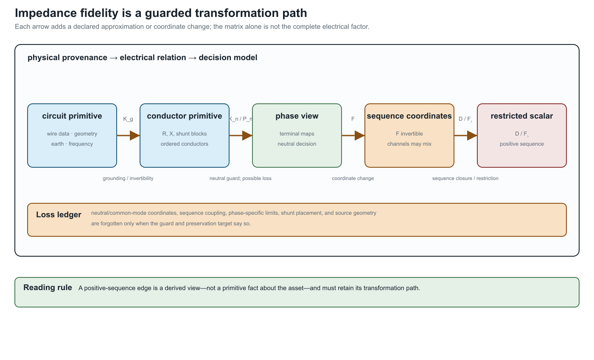

From conductor geometry to impedance fidelity
Page status: physical-fidelity reference chapter; a geometry-derived running-network certificate remains future work.
The matrix attached to a line is not an arbitrary edge label. It is often the result of a modelling ladder that starts with conductor geometry, earth-return assumptions, frequency, and wire data. The ladder explains why a graph can look unchanged while its electrical relation—and therefore its decisions—has changed.
The physical-to-matrix ladder
For a declared ordered conductor set, a typical steady-state construction is
\[\text{wire data + geometry + earth model + frequency} \longrightarrow (\mathbf R_\ell,\mathbf X_\ell,\mathbf Y^{\mathrm{sh}}_\ell) \longrightarrow \text{terminal factor} \longrightarrow \text{network equations and decisions}.\]
The series matrix is
\[\mathbf Z_\ell=\mathbf R_\ell+\mathrm j\mathbf X_\ell.\]
Diagonal entries describe self effects; off-diagonal entries describe mutual coupling. Earth-return and grounding assumptions can affect both. A linecode that contains only a scalar positive-sequence impedance has already forgotten which conductor geometry and return path produced it.
The matrix is still not the complete factor. Terminal maps, from/to shunts, connection factors, ratings, and state ownership determine how it enters the network. This is why the book indexes intrinsic impedance by $\ell$ and terminal quantities by $\ell ij$.
A canonical impedance-data contract
Standardisation should make the source model richer than any one solver input. For each oriented branch $\ell i j$, the canonical record should retain:
- the asset identity, ordered conductor set, and endpoint terminal maps;
- geometry, conductor material, length, temperature, frequency, and earth model;
- the derivation method (for example Carson, Pollaczek, finite element, or a fitted matrix) and its source version;
- the series matrix $\mathbf Z_\ell$ and endpoint shunt blocks $\mathbf Y^{\mathrm{sh}}_{\ell i j}$ and $\mathbf Y^{\mathrm{sh}}_{\ell j i}$ separately;
- units, base values, matrix ordering, coordinate convention, and reference ground semantics; and
- current, voltage, power, neutral, protection, and control observations that use the resulting coordinates.
The canonical record is therefore a source of derived views, not merely a serialization of the values most convenient for one engine. A positive- sequence scalar or a phase-only matrix can be exported, but it must retain a pointer to the full record and the transformation path that produced it.
The first executable version of this contract is the generated experiments/generated/four-wire-impedance-model-ladder.json fixture. It is a small deterministic matrix example rather than a geometry-identification claim. Its purpose is to make ordering, units, ground assumptions, shunts, recovery maps, and risk tags testable before importing larger authored case studies.
The source-backed follow-on is the Australian Carson reproduction. It lifts the construction fields that are actually present in the ImpedanceModels.jl history, regenerates the primitive and OpenDSS solve, and keeps the published Australian matrices in a separate comparison channel until their original construction mappings are recovered.
Symmetry and sequence coordinates
For three phase conductors, a perfectly transposed idealisation often has a circulant phase block: equal self terms and equal mutual terms under cyclic permutation. The Fortescue transform then diagonalizes that block into sequence coordinates. This is a legitimate coordinate specialization when the factor, grounding, boundary data, controls, limits, and observations all preserve the same symmetry.
An untransposed geometry generally breaks circulance. The transform still exists as a change of coordinates, but the transformed matrix is not diagonal; sequence channels mix. The distinction is important:
- transform available: any compatible phase vector can be expressed in sequence coordinates;
- sequence decoupling valid: the constitutive matrices and the rest of the decision model preserve the sequence subspaces.
The existing positive-sequence collapse chapter gives the exact restriction theorem. This chapter supplies the physical provenance that theorem needs.
Fidelity levels
| Level | Retains | Typical questions it can answer | Typical loss |
|---|---|---|---|
| geometry-derived conductor matrix | wire positions, mutual terms, earth model, frequency | unbalance, neutral shift, conductor currents | detailed geometry may be unavailable or uncertain |
| fitted full matrix | coupled $\mathbf Z$ and shunt blocks | multiconductor PF/OPF and terminal limits | source geometry and identification uncertainty |
| diagonal phase matrix | separate phase self terms | decoupled approximations with explicit phase identity | mutual coupling and return-path effects |
| sequence matrix | zero/positive/negative sequence blocks | balanced or fault studies under closure assumptions | phase-specific geometry and many terminal decisions |
| scalar positive-sequence edge | one complex relation per bus pair | transmission-style balanced PF/OPF | neutral, phase, winding, and asset distinctions |
Moving down the ladder is not automatically wrong. It is a projection whose admissibility depends on the study query. A scalar edge may be adequate for a balanced transmission objective and inadequate for a neutral-current limit or phase-specific protection observation.
Conditioning is part of fidelity
Geometry-derived matrices can be ill-conditioned because conductors are close, because a neutral is weakly grounded, or because the chosen coordinate basis contains nearly redundant modes. Per-unit scaling and coordinate changes may improve numerical conditioning without changing an invertible solution set; they do not restore information that a projection discarded. A reduction that removes a weakly observable neutral mode must report both its algebraic guard and its decision-observation consequences.
What the adapter must record
For every impedance matrix used in a transformation, record:
- conductor order and terminal maps;
- units, base values, frequency, and length convention;
- geometry or linecode provenance;
- earth-return and grounding assumptions;
- symmetry, reciprocity, passivity, and conditioning diagnostics;
- whether shunts are explicit or folded into a terminal primitive; and
- which limits and decisions use the resulting current coordinates.
This ledger connects the physical model to the graph model. It prevents a sequence or scalar edge from being mistaken for a primitive fact about the asset, and it gives a principled place to report uncertainty before an OPF comparison is made.
The model ladder is a transformation path
The common path is not a list of interchangeable names:
\[\text{circuit primitive} \xrightarrow{K_g} \text{conductor primitive} \xrightarrow{K_n\ \text{or}\ P_n} \text{phase view} \xrightarrow{\mathbf F} \text{sequence coordinates} \xrightarrow{D\ \text{or}\ \mathbf F_1} \text{restricted scalar view}.\]

$K_g$ and $K_n$ require declared grounding and invertibility assumptions; $P_n$ can recover neutral current under its zero-ground-current guard but loses common-mode voltage; $\mathbf F$ is an invertible coordinate change; $D$ deletes sequence coupling; and $\mathbf F_1$ retains only a positive-sequence subspace. The last two are therefore not harmless formatting operations. Their admissibility depends on the factor, boundary data, limits, controls, and observations.
The companion transformation register records these distinctions as typed edges. The four-wire ladder fixture checks the exact current-recovery relation, exposes nonzero sequence mixing for a non-circulant matrix, and keeps shunt deletion and positive-sequence use visibly guarded.
Relation to the running network
The running network deliberately retains full matrices, heterogeneous line terminal maps, and a three-winding factor. Its positive-sequence specialization is a derived view, not a replacement for the source. A future geometry-derived fixture can populate this ladder numerically; until then, the book treats the matrix provenance and symmetry assumptions as explicit contract fields rather than claiming a geometry-to-OPF validation result.